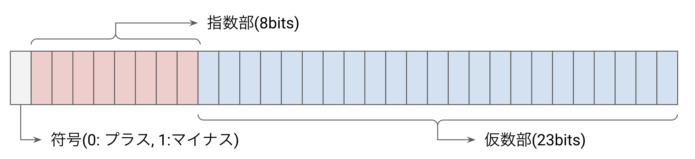
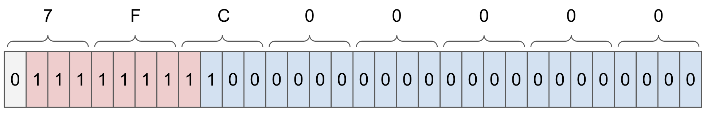
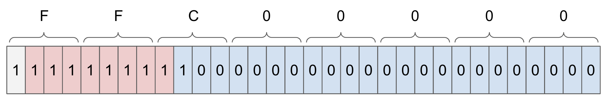

先日、次のような Tweet を見かけました
TIL I discovered that TensorFlow.js uses an interesting trick to sniff your CPU architecture in WebAssembly. pic.twitter.com/LVyywIM48I
— Robert Knight (@robknight_) January 4, 2023
面白かったので、なぜこうなるのかの解説と、ついでにこのテクニックを使った JIT 検知方法などについて紹介します。
JavaScript における低レイヤーの扱い
JavaScript においては、挙動が比較的しっかりと仕様に定められているために、環境による振る舞いの違いはあまり発生しません。しかし、低レイヤーに降りるほど振る舞いは実装依存になり、環境差が発生する余地が出てきます。
一番わかりやすいのは、リトルエンディアン・ビッグエンディアンです。例えば以下のようなコードを実行した場合、リトルエンディアンを採用しているアーキテクチャとビッグエンディアンを採用しているアーキテクチャでは結果が異なります。
const u32 = new Uint32Array(1);
const u8 = new Uint8Array(u32.buffer);
u32[0] = 0x12345678;
console.log(u8[0].toString(16)); // 78 or 12
上記のコードは、リトルエンディアンの場合は 0x78 が、ビッグエンディアンの場合は 0x12 が返ります。このように少し低レイヤーに入ると環境やアーキテクチャの差によって結果が変わり得ます。現在 JavaScript が動いているほとんど全ての CPU アーキテクチャはリトルエンディアンを採用しているためにこれが問題になることは少ないとは思いますが、意識しておく価値はあるでしょう。
なお、この記事はリトルエンディアンを前提にしております。
Intel Architecture の検知コード
さて本題です。次のコードによって、Intel アーキテクチャかどうかを判定することが出来る、というのがツイートの主張でした。実際は WebAssembly (wasm) で書かれているようですが、以下の JavaScript コードでも判定出来ます。
const f = new Float32Array(1);
const u8 = new Uint8Array(f.buffer);
f[0] = Infinity;
f[0] = f[0] - f[0];
console.log(u8[3]); // 255 if Intel, 127 otherwise
Intel アーキテクチャの場合は 255 が表示され、それ以外の場合は 127 が表示されます。手元の Intel Mac と M1 Mac の各ブラウザで確認したところ、それぞれ 255 と 127 が表示されていました。
なぜ結果が変わるのか
NaN のビット表現
この結果を理解するためには、まず NaN のビット表現についての理解が必要です。
近代のコンピュータの浮動小数点演算は、IEEE754 と呼ばれる仕様に従います。IEEE754 において、浮動小数点数で表現可能なすべての数値において、NaN 以外の値においては数値とビット表現が 1 対 1 で対応しています。しかし NaN だけが複数のビット表現を持ちます。
例えば今回利用している 32 bit の浮動小数点の場合、浮動小数点のビット表現は以下のようになります。

詳細は省きますが、例えば符号が 1、指数部が 01111101、仮数部が 11010001011011110100010 だとすると、全体のビット表現は 0b11110110111010001011011110100010 となり、その表現の示す数値は -0.454526… となります。
さて、この仕様において、
- 指数部が 全部 1
- 仮数部が 0 以外 （仮数部が 0 の時は ±Infinity）
を満たす場合に、その表現は NaN を示します。NaN の仮数部にはデバッグ用等のデータを持たせることが出来る設計なのですが、実際にこの NaN 仮数部の情報を使用するコードはほとんどありません。
32bit 浮動小数点の場合、一般的な NaN のビット表現は次のような形になります。
const f = new Float32Array(1);
const u32 = new Uint32Array(f.buffer);
f[0] = NaN;
console.log(u32[0].toString(16));
// => 0x7fc00000 === 0b0111_1111_1100_0000_0000_0000_0000_0000

このように、符号は 0 で、指数部には全て 1 が入り、仮数部の最上位ビットのみが 1 になり、残りは 0、というのが一般的な NaN のビット表現です。
NaN のビット表現やそれにまつわる処理は結構複雑で、例外を飛ばす signaling NaN、例外を飛ばさない quiet NaN、演算途中で NaN が発生した場合に立つ INVALID flag などなど、実際の演算で NaN が絡む場合の仕様が細かく定められています。興味があれば、wikipedia の NaN の項を参考にしてみてください。ただ、JavaScript においてはこれらの NaN の bit 表現の違いが挙動に変化を与えることはなく、NaN は区別なく同一の NaN という概念として扱われます。
今回重要なのは、NaN にはビット表現において正負の値を持てる、ということです。NaN 表現に符号ビットは関係ありません。なのでプラスの NaN とマイナスの NaN が存在し得ます。プラスの NaN の場合、上位 8 bit は 0x7F === 127 に、マイナスの NaN の場合は上位 8 bit は 0xFF === 255 となります。判別コードにおける 127 と 255 はこの違いを表しています。
Intel アーキテクチャの特殊挙動
さて、では具体的に上記コードでなぜ Intel アーキテクチャを判定出来るのかを解説します。この章の執筆には @teehah さんの多大なご協力を得ております。ありがとうございます！
Intel のサイトにある次の PDF シートを見てみてください。
この中の R Ind こと「Real Indefinite」が今回のポイントです。このシートでは、Intel の演算ではいくつかのパターンにおいて Real Indefinite になることが定義されており、そのパターンになった場合は特殊な値（R Ind）を取ることが示されています。この R Ind のビット表現は次の通りです、

この R Ind の表現は、負の NaN の値になっており、上位 8 ビットが全て 1 になっております。上記のコードではその上位 8 bit を判定して、それがすべて立っている（255）場合に Intel アーキテクチャと判断しております。
この Real Indefinite、すなわち実数不定値とは何ぞや、というのを調べると、次の資料がヒットしました。
https://www.academia.edu/13572645/inter_basic_arsitecture
7.2.4. Indefinite
For each FPU data type, one unique encoding is reserved for representing the special value indefinite. For example, when operating on real values, the real indefinite value is a QNaN (see Section 7.4.1., “Real Numbers”). The FPU produces indefinite values as responses to masked floating-point exceptions.
Intel 独特の文化だと思うのですが、qNaN の表現のうちの 1 つを「Real Indefinite」という特別な表現として扱い、いくつかの演算（上記シートの他、上の資料の TABLE 7-20 にも同様の内容が記載されています）の返り値として、この R Ind という特殊な表現の qNaN を返す実装になっているようです。
R Ind を返すいくつかの演算の 1 つが「無限大マイナス無限大」であり、Intel アーキテクチャを判断するコードはその演算の結果が R Ind であるかどうかをチェックするコードとなっております。Intel 以外のアーキテクチャではこのような特殊な NaN の処理をしていないため、普通の NaN すなわち 上位 8 bit が 127(0x7F) になる NaN が返ってくるのですが、Intel アーキテクチャでは返り値が R Ind となり上位 8 bit が 255(0xFF) となるため、結果として 255 との比較で Intel アーキテクチャであるかどうかがわかる、という流れです。
（なお細かい話ですが、FP 例外をマスクしない設定においては R Ind を生成しない可能性が高いので、この判別方法は使えないかもしれません）
なぜわざわざ代入してから引き算しているのか
ひとつ気になるのが、チェックコードでは f[0] = Infinity; と代入してから f[0] = f[0] - f[0] を呼んでいます。実は、これにも意味があるのです。
f[0] に代入せず、普通に無限大同士の引き算をしてみましょう。次のようなコードになります。
const f = new Float32Array(1);
const u8 = new Uint8Array(f.buffer);
f[0] = Infinity - Infinity;
console.log(u8[3]);
手元の Intel マシンの Chrome で上記のコードを実行したところ、予想通り 255 が返ってきました。問題なく動作しているように思えるじゃないですか。ところがどっこい、罠があります。次のコードを Chrome もしくは Node.js 等の V8 環境で実行してみてください。
const func = () => {
const f = new Float32Array(1);
const u8 = new Uint8Array(f.buffer);
f[0] = Infinity - Infinity;
return u8[3] === 255;
}
for (let i = 0; i < 100000; i++) {
if (!func()) {
console.log(i);
break;
}
}
手元の Intel マシンの Chrome で実行したところ、3289 を表示してストップしました！私の環境では、実行するたびに違う値を表示します。
この挙動は次のように説明出来ます。JIT がかかる前は f[0] = Infinity - Infinity というコードを逐次実行しているために、演算結果として毎回 R Ind の値が f[0] に代入されているのですが、JIT によって Infinity - Infinity が定数として事前に演算され、その結果である NaN に最適化で置き換わり、結果として f[0] = NaN というコードに最適化されてしまったせいで R Ind が発生しなくなった、と考えることが出来ます。
というわけで、f[0] = Infinity; f[0] = f[0] - f[0]; という冗長なコードは、V8 の JIT による最適化を避ける意図によって書かれていたと考えられます。
なお、これを利用するとIntel アーキテクチャかつ V8 エンジンの場合限定ですが、次のコードによって自分自身が JIT 化されているかどうかを確認出来ます。
function isInJIT() {
const f = new Float32Array(1);
const u8 = new Uint8Array(f.buffer);
f[0] = Infinity - Infinity;
return u8[3] === 127;
}
もし JIT がかからなかったら、毎回律儀に Infinity - Infinity の計算が行われて毎回 R Ind が返ってくるため、上位 8 ビットが 255 になります。JIT がかかり最適化されたら、Infinity - Infinity が最適化によって普通の NaN に置換され、結果として上位 8 ビットが 127 になります。
f[0] = Infinity; f[0] = f[0] - f[0]; が JIT で最適化されていないのは、おそらくたまたまです。もし将来的にこれも JIT 等で最適化されるようになったら、もう少し複雑で最適化されにくいコードに変える必要があるのでしょう。
ブラウザごとの挙動の違い
当然ながら、これらの挙動は JavaScript の実行エンジンによって左右される可能性があります。例えば、次のようなコードを見てみてください。
const f = new Float32Array(1);
const u8 = new Uint8Array(f.buffer);
f[0] = 0;
f[0] = f[0] / f[0];
console.log(u8[3]); // ※1
f[0] = 0 / 0;
console.log(u8[3]); // ※2
まず、このコードは Intel 以外の環境だと、全て 127 を返します。R Ind の文化がないので当然ですね。
さて、では Intel だとどうなるでしょうか？本来であれば全部 255 が返ってくるはずなのですが、手元の Intel 環境で試したところ、
- Chrome: ※1 === 255, ※2 === 127
- Safari: ※1 === 255, ※2 === 255
- Firefox: ※1 === 127, ※2 === 127
となりました。
本来、Intel アーキテクチャにおいて 0/0 は R Ind を返さないといけないので、255 になるはずです。しかし内部で演算前に NaN になることがわかっている場合（もしくは NaN が返ってきた後に何らかの処理が挟まっている場合）には、JavaScript エンジンによってその値が R Ind ではない普通の NaN に変えられることもあるでしょう。
Safari は愚直に 255 を返してくれました。Firefox は 127 が返ってきました。Chrome は、変数同士を割り算したときは 255、リテラルで 0/0 を書いた場合には 127 を返すというトリッキーな結果になりました。おそらく Chrome では 0/0 を構文解析の段階で NaN に置換しているか、それに近い処理が入っているのでしょう。
このように、f[0] = 0; f[0] = f[0] / f[0] だと Firefox において結果の NaN に対して何らかの置換が入ってしまい R Ind ではなくなるので、Intel アーキテクチャの判断に利用することが出来ません。オリジナルコードで f[0] = Infinity; f[0] = f[0] - f[0]; を使っているのは、モダンブラウザ（の JavaScript エンジン）において、たまたま最適化されずにきちんと R Ind を返してくれる演算のひとつが「無限大マイナス無限大」だった、という消極的な理由によるものだと思われます。
まとめ
結論として、現在は大体の環境において、以下のコードで Intel アーキテクチャであるかどうかの判断が可能です。
function isX86() {
const f = new Float32Array(1);
const u8 = new Uint8Array(f.buffer);
f[0] = Infinity;
f[0] = f[0] - f[0];
return u8[3] === 255;
}
このコードは、Intel の仕様に基づいたものであり、Intel アーキテクチャをほぼ確実に判定することが出来ます。ただし、ブラウザの JavaScript エンジンの最適化の変化などによって、将来機能しなくなる可能性が大いにある点には気をつけましょう。
余談: AMD はどうなの？
AMD の一次資料にあたることが出来なかったのですが、AMD は SSE3 までは Intel と同じ実装のはずで、SSE2 において R Ind はドキュメント化されていました。このドキュメントは @hagat さんに教えてもらいました。ありがとうございます！
https://www.intel.co.jp/content/dam/www/public/ijkk/jp/ja/documents/developer/w_fp_precision_j.pdf
P.38 の「QNaN 実数不定値」というのが QNaN Real Indefinite、すなわち本記事の R Ind です。というわけで、おそらく SSE2 をサポートする AMD も上記コードで同じように Intel アーキテクチャだと判定されると思います。なお、@hotpepsi さんの手元の AMD 環境では Intel と同じ挙動だと確認してもらいました。ありがとうございます！